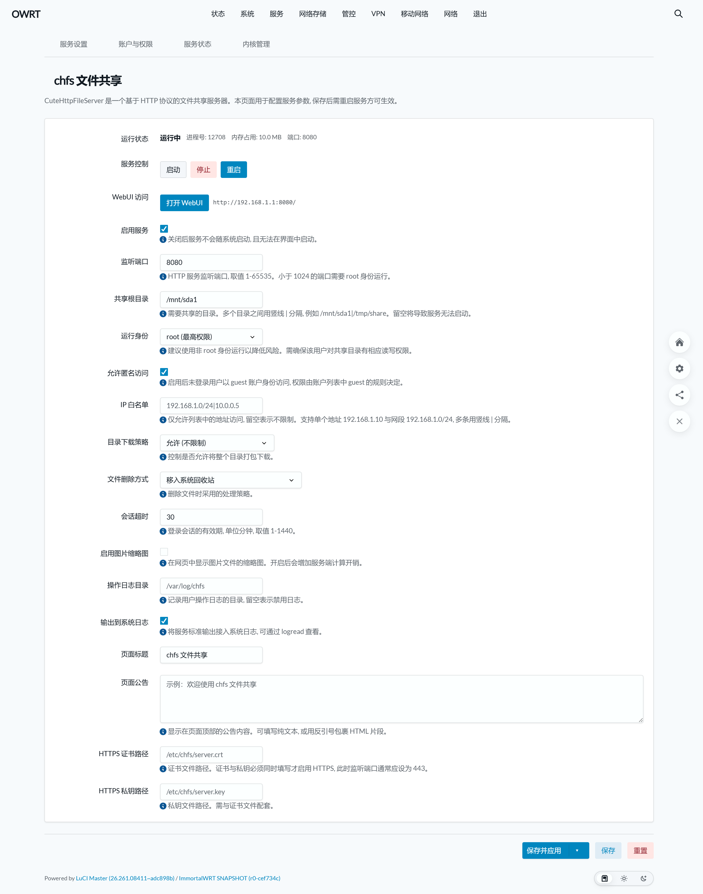
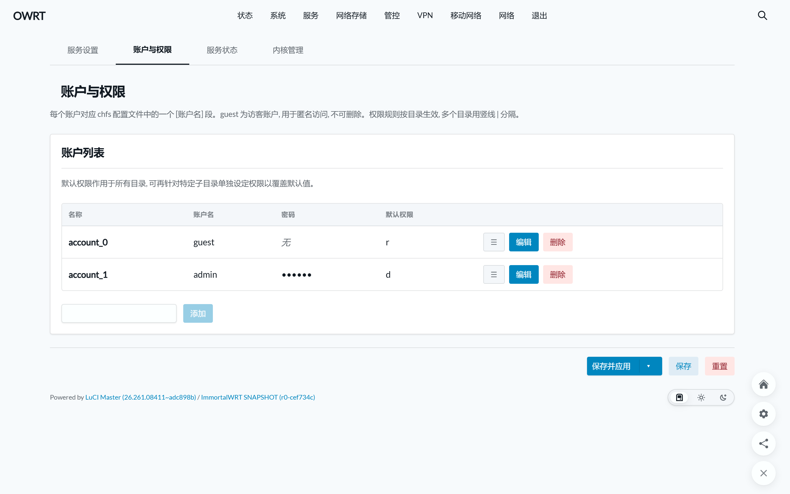
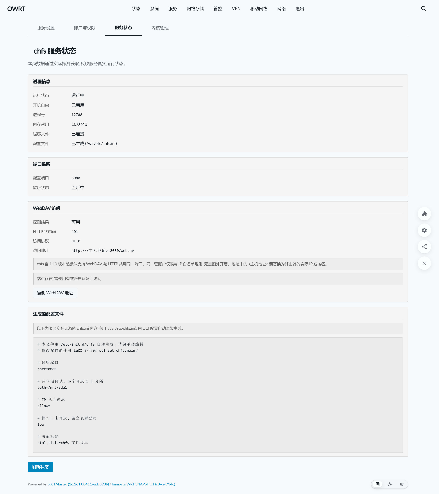
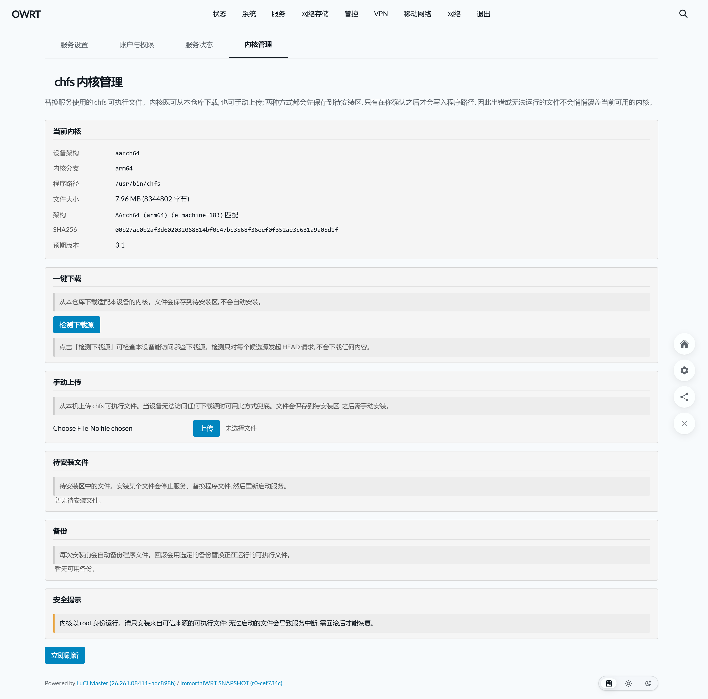

壁纸透视与毛玻璃调节
chfs 文件共享服务
OpenWrt 现代图形化管理插件
为 CuteHttpFileServer 打造的原生 LuCI 管理插件。具备硬核底层运行期真实探测、精细化多路径账户权限体系、原生 WebDAV 挂载，以及内核在线检测下载、自动备份与原子故障回滚。
免刷机 · 移动端与桌面双端体验 LuCI 插件
完美还原客户端 JS 渲染架构。支持服务控制、账户权限细分、底层探测与内核备份回滚模拟！
基础服务配置
服务启用状态、共享根目录、端口与身份控制
✓ 底层包含防空路径回退检测（避免暴露系统 /usr/bin）
默认 8080，支持自定义为任意空闲端口
LuCI 实机界面图赏
截图取自 ImmortalWrt SNAPSHOT 实机（LuCI Master + Aurora 主题），点击任意图片即可全屏大图预览。

服务设置界面
服务控制、共享根目录、运行身份与直达链接

账户与权限配置
账户密码管理、默认权限与子目录特殊覆盖

服务状态与 WebDAV
进程信息、端口监听、WebDAV 状态与配置全文

内核管理与生命周期
ELF 架构自动匹配、一键检测下载与快照回滚
专为 OpenWrt NAS 打造的八大强悍特性
拒绝虚假开关与多余性能开销，全量状态基于底层真实探测，极致轻巧。
硬核真实状态探测
告别传统插件的虚假开关，底层通过 pgrep 运行检测、/proc/net/tcp 端口监听与 PROPFIND 端点真实握手。
智能感知直达 WebUI
自动识别并拼接当前运行期真实生效的协议（HTTP/HTTPS）与端口，提供一键直达按钮，端口冲突即刻告警。
原生 WebDAV 协议支持
深度集成 chfs 内置 WebDAV 服务，状态页一键复制标准挂载链接，Windows、macOS、iOS 手机一键无缝映射为本地磁盘。
精细化多路径权限控制
图形化账户管理，支持禁止访问、只读、读写、完全控制 4 级权限划分，支持针对子目录设立特殊权限覆盖。
完整内核生命周期管理
独立内核管理页，支持多镜像加速在线下载与本地上传，提供 ELF 架构自动匹配、安装前自动备份与原子故障回滚。
空路径安全回退防护
彻底防范因外接移动硬盘未挂载成功时，chfs 自动回退至自身所在目录（/usr/bin）导致系统文件泄露的严重安全隐患。
LuCI 原生变量与明暗自适应
基于 LuCI 官方原生 CSS 变量系统设计，不写死硬编码色彩，无缝融合 Bootstrap、Argon、Aurora 等第三方深浅主题。
双包格式 & 全架构覆盖
同时提供 OpenWrt 24.10 的 ipk 与 25.x / ImmortalWrt 的 apk，覆盖 x86_64、Filogic ARM64 与通用 ARMv8。
前后端协同与数据链路
客户端 JS 负责界面渲染与事件响应，ucode 负责轻量高效的 RPC 业务逻辑与系统操作。
四视图单页应用 (设置 / 账户 / 状态 / 内核)
/usr/share/rpcd/ucode/chfs.uc 严格鉴权与探针执行
/etc/init.d/chfs 托管常驻守护，加载生成的 ini
安装与快速部署指南
Release 资产按架构分目录存储：x86_64/（软路由/虚拟机）、aarch64_cortex-a53/（MT798x / Filogic / H5000M）、aarch64_generic/（通用 ARMv8）。界面与语言包统一归入 all/。
安装成功后，刷新路由器后台即可在侧边栏：网络存储 (NAS) → chfs 文件共享 找到管理页面。
版本发布与产物下载
当前版本: v1.0.1 (chfs 内核 3.1)
x86_64 架构套件
适用于 Intel / AMD 架构软路由、工控机与各类虚机环境
aarch64_cortex-a53
适用于 Hiveton H5000M、红米 AX6000、360T7、GL-MT6000 等
LuCI 管理界面与语言包
纯客户端 JavaScript 视图与 ucode 桥接后端，任意架构通用
核心注意事项与排坑指南
汇聚开发者在实机测试与极端环境下总结的经验之谈
🚨 空路径回退重大风险防范
当配置中的共享路径在设备上不存在时（例如移动硬盘挂载失败或拔出），chfs 进程默认会回退至自身所在目录（即 /usr/bin）作为共享根目录！此行为将导致路由器系统二进制文件暴露在局域网。本插件底层已加入严格的挂载路径实测校验，有效拦截该潜在隐患。
📦 内核备份快照空间清理
内核管理模块备份位于 /etc/chfs/kernel-backup。每次安装新内核均会生成完整快照，单次操作约占用 8MB。小容量闪存（如 32MB / 64MB ROM）设备建议定期通过 SSH 或文件管理器清理历史无用备份，避免闪存耗尽。
Q: WebDAV 挂载在 Windows 上连接报错 0x800700DF？
Windows 自带的 WebClient 服务默认限制单文件传输大小为 50MB。如需拷贝大文件，只需修改 Windows 注册表项：HKEY_LOCAL_MACHINE\SYSTEM\CurrentControlSet\Services\WebClient\Parameters\FileSizeLimitInBytes，将其调至最大（例如 4GB：0xffffffff），重启 WebClient 服务即可畅快传输。
Q: 为什么使用客户端 JS + ucode 架构？
相比传统的 Lua CBI 表单模型，客户端 JS 渲染架构完全剥离了服务器端渲染负担，且基于 OpenWrt 22.03+ 官方推荐的 rpcd-mod-ucode，在拥有秒级响应的同时杜绝了内存泄漏，无缝支持明暗主题切换。